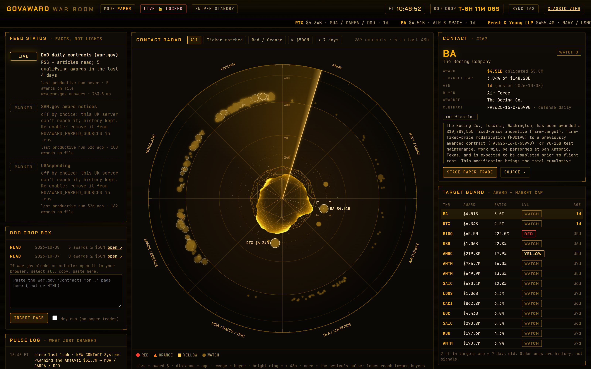
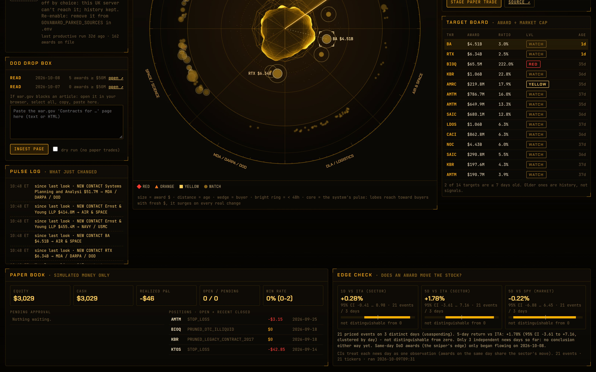

The main screen. Everything here updates every 30 seconds; nothing on it can place a real trade.

12345678910111213GOVAWARD_ALLOW_LIVE=yes. Shows red LIVE ARMED if anyone unlocks it.Scroll down: the event log, your paper account and the edge check.

141516| Slice (wedge) | who bought: Army · Navy/USMC · Air & Space · DLA/Logistics · MDA/DARPA/DoD · Space/Science · Homeland · Civilian |
| Distance from centre | age. Rings at 24H, 7D, 30D, 60D. Beyond 30D is shaded: history, almost certainly priced in. |
| Size | award dollars (log scale; $50M is the smallest dot). |
| Shape + colour | RED diamond · ORANGE triangle · YELLOW square · WATCH circle — materiality, highest first |
| White outline | matched to a listed ticker (something you could actually trade). |
| Expanding bright ring | posted in the last 48 hours. |
| Comet from the rim | a new contact just arrived, flying in on its buyer's bearing; it flares where it lands. |
| Ring rippling outward | an event happened (colour = kind, as in the pulse log). |
| Brackets + dashed line | the contact you selected. Brightening as the sweep passes is only a highlight. |
| Always breathing | it is alive and connected; heartbeat about every 2.4 s. |
| Lobes toward a slice | award dollars from that buyer in the last 7 days; bigger lobe = more money. |
| Thin spike toward a slice | points at the contact you selected. |
| Surge toward a slice | a new contact from that buyer. |
| Surge, no direction | a system event: order staged, P&L changed, feed changed, sniper armed. |
| Faster heartbeat, quicker sweep | sniper armed; energy keeps building over the last 15 minutes before 5 PM ET. |
| Glitching | a feed broke, or war.gov blocked today's article. |
| Colour | amber = normal · orange = war.gov blocked (paste needed) · red = an active feed is down, or LIVE trading was unlocked |
| Grey and dim | the dashboard lost the server (SYNC LOST). It wakes when the server answers. |
| LIVE | fresh data proven by evidence (articles read, awards on file). |
| STALE | reachable, but the newest award is old. |
| DOWN | the source does not answer from the server. |
| BLOCKED | war.gov refused the article: paste it in the drop box. |
| PARKED | switched off on purpose (SAM.gov, USAspending); history kept. |
ssh -L 8890:127.0.0.1:8890 -L 8055:127.0.0.1:8055 root@vmi3134862.contaboserver.net
2 · Browse to http://localhost:8055grep GOVAWARD_DASH_PASSWORD /root/govaward-alpha/.env
Old layout: /classic.Screens captured from the live system on 2026-10-09 14:49 UTC. Regenerate: docs/legend/legend_build.py.